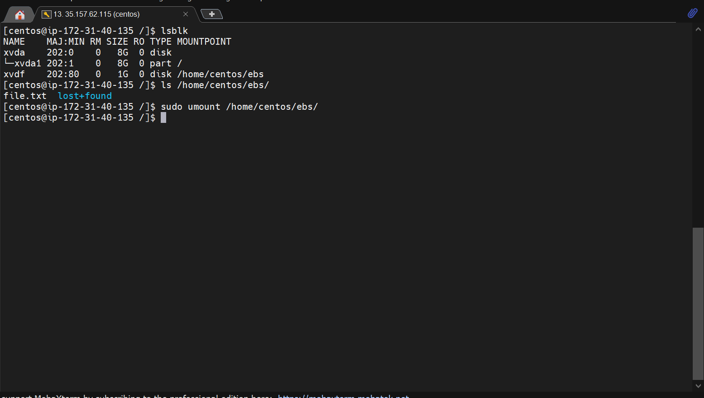

student: S.Savchyn
TASK_2.2. Virtualization and Cloud Basics
*launched Linux Virtual Machine with amazon Amazon Lightsail
*launched CentOS Virtual machine without Amazon Lightsail
*created snapshot of the instance
*created additional EBS disk of 1GB
*created file.txt on the new EBS disk

*attached new EBS to the second instance
*launched WordPress instance with Amazon Lightsail
*entered WordPress Dashboard
*uploaded file to S3 bucket
*uploaded file to S3 bucket using AWS CLI